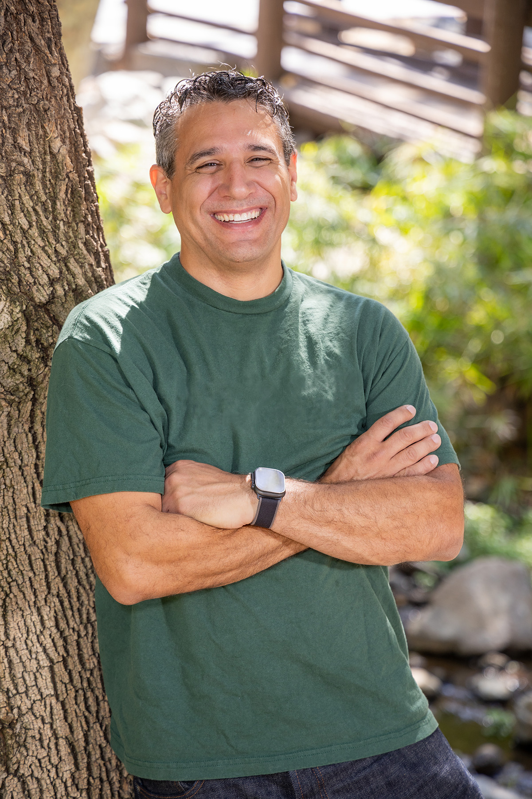
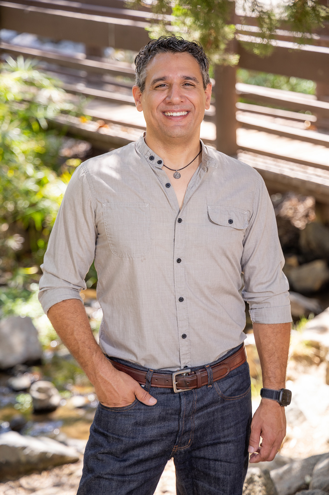

Dr. Michael Braun
Braun for Diamond Bar
Experienced leadership, responsible stewardship, and a commitment to reliable, affordable water for our community.
Vote November 3, 2026


Evidence-Based Leadership. Community Commitment.
Michael Braun is a professor of criminal justice and longtime educator who brings an evidence-based, practical approach to public service. He believes effective local government requires careful stewardship of public resources, transparent decision-making, and a focus on the long-term needs of the community.
As a candidate for the Walnut Valley Water District Board of Directors, Michael is focused on maintaining a reliable water supply, keeping rates responsible, investing wisely in infrastructure, and ensuring that decisions are made openly and with the interests of ratepayers in mind.
Protecting Every Drop. Respecting Every Dollar.
Fair Rates, Fully Explained
Rates should reflect the demonstrated cost of reliable service, with every increase clearly and publicly justified.
Transparent Reporting & Oversight
When rates rise, ratepayers deserve to know exactly where the money goes: project by project, dollar by dollar.
Reliable Infrastructure
Hundreds of miles of pipes, reservoirs and pumps depend on careful oversight of every capital dollar, not deferred maintenance.
Water Security & Emergency Resilience
We depend heavily on imported water. The District needs a real plan for drought and demand, 10 to 20 years out, not just this cycle.
Trusted Community Leaders
Andrew Chou
Community Leader
James Crawford
Director, Metropolitan Water District
Juan Garza
Director, Central Basin Municipal Water District
Scarlett Kwong
Former Director, WVWD
Theresa Lee
Director, WVWD
Michael Lin
Director, WVWD
Stan Liu
Diamond Bar City Council Member
Jorge Marquez
Three Valleys Municipal Water District
Chia Yu Teng
Diamond Bar City Council Member
Help Build a Stronger Water District
Whether you can volunteer, display a yard sign, endorse the campaign, or simply help spread the word, your support can make a difference.
Out in the Community
Stay Connected with the Campaign
Get campaign updates, information about water district issues, and opportunities to participate in the conversation.